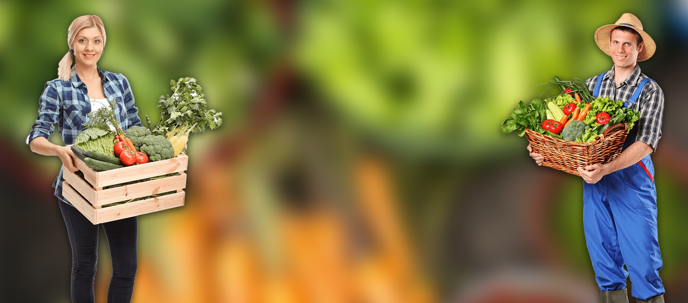

What our community says
Don't take our word for it — here's what our customers, members and neighbours have to say.

The farm share changed how our family eats. My kids now ask for kale chips. KALE CHIPS. That's the power of real food. Sarah BennettHome Cook · CSA Member 3 Years★★★★★
Sarah BennettHome Cook · CSA Member 3 Years★★★★★
What the community says
The heirloom tomatoes tasted like the ones from my grandmother's garden. I have not eaten a tomato like that in twenty years — and I grew up in Italy.
Sarah BennettHome Cook★★★★★
The weekly share changed how our family eats. The kids argue over who gets the first strawberry — every single week. That's a good problem to have.
 David ChoCSA Member · 3 Years★★★★★
David ChoCSA Member · 3 Years★★★★★
Delivery is always on time, the crates are beautiful, and you can genuinely taste the difference. Worth every penny, and I used to think $12 for vegetables was outrageous.
 Priya RamanWeekly Subscriber★★★★★
Priya RamanWeekly Subscriber★★★★★
We did the U-Pick weekend with the kids. They spent two hours in the strawberry patch and didn't look at a single screen. Absolute magic.
Emma W.U-Pick Visitor★★★★★
The farm tour was the highlight of our summer camp. Martha showed the kids how to plant a seed and they ran home demanding a garden bed. Thank you!
Mr. O'BrienSchool Teacher★★★★★
I've been a subscriber for two years. The quality is consistent, the produce is always interesting, and the customer service is personal and warm.
James K.Weekly Subscriber★★★★★
I bought the corporate box for my office. Everyone said it was the best thing we'd ever done for the break room. The fruit is incredible.
Linda M.Office Manager★★★★★
I love that the crates come back and get reused. It makes me feel better about the whole thing. And the carrots actually taste like carrots again.
Marcus T.Eco-Conscious Eater★★★★★
The seasonal variety is incredible. Every week there's something new and exciting. I've become a better cook because of the farm share.
Nina P.Food Lover★★★★★
Ready to leave your own review? 🌻
We'd love to hear what you think. Every review helps someone else find the farm.
Share Your Experience